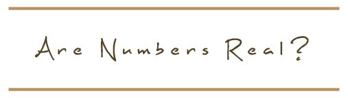
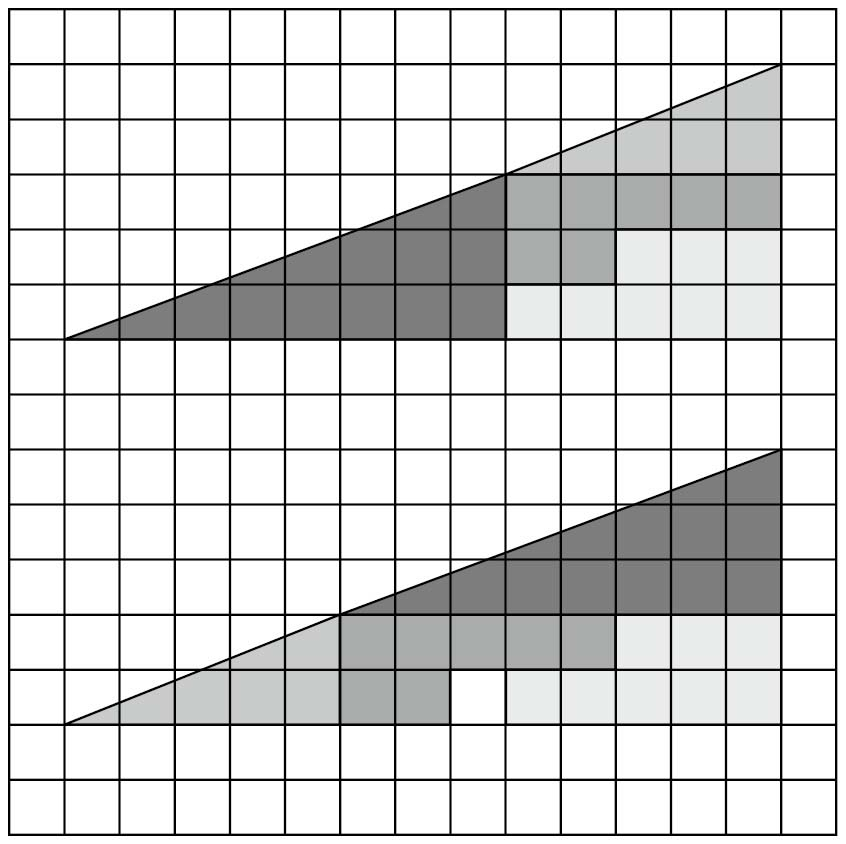
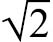

上学时，如果你接触过几何学，并且在解题结束时以胜利者的姿态（或者怒气冲冲地）写下QED（拉丁语“quod erat demonstrandum”的缩写，意为“证明完毕”）这个表示几何证明过程结束的传统标志，就说明你正走在欧几里得所指引的道路上。在大约2 000年的时间里，他的著作《几何原本》一直是至高无上的数学教科书。但是，关于欧几里得本人，我们却知之甚少。有的学者甚至认为根本不存在这样一个人，欧几里得只是代表若干作者的一个虚构的姓名。我们仅知道他的著作出自托勒密一世在亚历山大创建的那所无与伦比的学校，欧几里得（如果他确实存在）是这所学校的一个重要人物。欧几里得是当时公认的名师，他的那部代表作是他授课所用的教科书。在撰写这部书时，他没有打算收录那些惊天动地的新发现，而是收集了那些已有的知识。然而，这些知识的编排方式却给人留下了极其深刻的印象。
欧几里得几何学建造了一个自得其乐的小小世界，从此以后，数学研究就沿用了这个模式。《几何原本》首先提出若干假设，然后在此基础上完成一系列逻辑清晰的证明。在证明的过程中，人们不需要从事诸如观察、计数、测量等苦活儿去解决现实世界的难题。现在，我们把这部著作看作一本权威的几何教科书，但实际上，书中还涉及算术，也介绍了古希腊人对代数问题的直观表示。从级数1 + 1/2 + 1/4 +1/8 + …这样的直观表示可以看出，古希腊人已经开始接触代数学了。
毫无疑问，证明的概念与精确性（与测量人员工作时只求大概的结果不同）是古希腊人对数学的最大贡献。我们知道，古埃及人在几何学的舞台上非常活跃，古巴比伦人的数字与代数知识也达到了古希腊人无法企及的高度。但是，这两个时间更早的文明对证明之道却不怎么关心，因为他们认为有数字或者图形就足够了。他们研究的仅仅是理论数学。
我们已经接触过数学证明的概念。数学证明始于毕达哥拉斯学派，但是欧几里得为证明过程建立了一套严格的模式。他首先为证明规定了一系列条件、公理或者“已知内容”。这些条件、公理或者“已知内容”无法加以证实，但是数学家要完成证明，就必须视其为理所当然。这些公理都是显而易见的（尽管有个别例外，但基本上确实如此），可以用作证明过程的基础。证明时，数学家必须从这些公理出发，环环相扣地完成一系列逻辑推理步骤，直到最终完成证明。
欧几里得的《几何原本》（从技术上看，应该称之为一套书，因为每卷的实际长度都受到限制）首先给出了一些定义（包括点、直线、圆的定义），然后是5条公设（也被称作“假设”）和5条公理（现在也被视为“公设”）。紧接着，他给出了第一条定理，描述了利用圆规和直尺作等边三角形的方法（古希腊人尤其热衷于尺规作图）。事实上，欧几里得给出的一些定义并不严谨缜密（例如，他用“倾斜角”这个名词来定义角，但实际上，“倾斜角”这个词反而比“角”更加冷僻），但是他所表述的意义都是正确的。本书给出这些公理，但不再提供详细的证明过程。
5条公设是：
1. 过任意两点都可作一条直线；
2. 一条直线可以无限延长；
3. 以任一点为圆心，任意长为半径，可以作一个圆；
4. 所有直角都相等；
5. 一条直线和另外两条直线相交，若两个内角之和小于180°，则这两条直线一定相交。
5条公理是：
1. 等于同量的量彼此相等；
2. 等量加等量，其和仍相等；
3. 等量减等量，其差仍相等；
4. 彼此能重合的物体是全等的；
5. 整体大于部分。
这些公设和公理大多是显而易见的常识，但是数学证明的严谨性要求我们不得进行不必要的假设。证明过程不接受常识作为论据。在数学世界中，我们可以做出在现实世界中不成立的假设，这是数学世界特有的有利条件之一。例如，我们从定义中可以看出，直线“只有长度，没有宽度”。而在现实世界中，线条肯定是有宽度的。直线的定义把我们置身于一个无法真实存在的世界之中。
此外，至少有一条公设对数学特有的环境做出了若干假设。这些假设没有出现在公理之中，是因为欧几里得从未想过这方面的问题。欧几里得的第五公设（该公设的意思是不平行的直线就会相交，但其语言表达异常复杂，它暗藏的意思就是平行的直线不会相交）在欧几里得研究的平面上的确是正确的，但对于在现实世界中更加常见的曲面，这条公设却不一定正确。例如，我们沿着朝北的方向，作若干条与地球赤道垂直的直线。这些直线就是地球的经线，在它们到达北极时就会相交，但是在赤道这个位置上，它们确实是互相平行的直线。所以，第五公设在平面上是成立的，但是在曲面上却不适用。
欧几里得几何学必须具备的一个基本条件是平行线不相交，否则它就会轰然倒塌。直到19世纪，人们才提出了适用于现实世界中的曲面的非欧几何。当时，除了测量地球表面以外，非欧几何的实用性似乎十分有限。但是，后来的事实证明，在爱因斯坦开始研究广义相对论时，非欧几何的研究领域已经延伸至多维曲面，并成为一种非常重要的研究工具。
想到数学可以彻底摆脱我们所在的物质世界继续存在并发挥作用，我们不禁要问，欧几里得的研究对象是现实世界吗？答案是否定的。但是，这并不说明他的研究就毫无价值。欧几里得几何学为现实世界绘制了一幅逼真的画像，非常珍贵，但它描绘的却不是一个真实的世界。也许最能说明欧几里得定理与现实世界具体对象之间关系的就是柏拉图的那个隐喻。这位成名时间比欧几里得早几百年的哲学家设想了一个犹如天堂般完美的宇宙，在这个世界里，欧几里得研究的那些数学概念是可以存在的。这些完美的图形和物体具有某种超现实性，而我们在现实世界里感知的那些图形和结构仅仅是这些纯净原型的投影。
具体来说，柏拉图用投射在山洞中的影子打比方。在他眼中，不完美的三角形就是在纯正数学世界的强光照射下，一个完美三角形留在山洞中的模糊阴影。他的这种理解有一定道理。这并不是说数学从某种意义上讲比现实世界更加真实或者更加完美，而是说宇宙过于复杂，我们很难将它惟妙惟肖地表现出来。因此，数学通常只能是真实宇宙的一种近似表现。整数在现实世界可以找到完全对应的对象，而分数则不可以。同样，现实世界是由原子和线条构成的，这些线条不仅有宽度，而且不是毫无瑕疵的直线，因此几何图形也不是现实世界的完美表现。
洞中影子的不完美特点（数学证明中的完美图形与我们在现实生活中处理、体验的那些对象之间的区别），在“失踪的正方形”这个令人费解的难题上得到了充分体现。

在这幅图中，两个图形看起来一模一样，只是它们各部分所处的位置不同。可以看出，下面的图形中有一个空白格，这说明下面图形与上面图形的面积并不相同。柏拉图的完美图形是不会出现这种情况的，但是在模糊、朦胧的现实世界中，画出来的线条都不精确，因此我们难免遇到这种情况。在上面的图形中，较小三角形的左边的角与较大三角形的左边的角看起来度数相同，但实际上并不相同。重新排列之后，那个空白格就是这个极其微小的差别造成的。
随着不断深入研究数学与现实世界的相互关系，我们越发清楚地看到在科学研究中使用模型的意义。模型就像在现实基础上制作的玩具。宇宙是一个庞大的存在，即使其中一个很小的部分（例如人）也有非常复杂的结构。在了解宇宙奥秘、确定其物理构成时，我们通常需要做简化处理，降低研究对象的复杂程度。
模型可以是看得见摸得着的具体表现，例如太阳仪。在计算机问世之前，这种简洁的太阳系机械模型一直深受欢迎。然而，我们使用的模型大多是由一系列方程或者数学系统构成的“数学模型”。它们具有现实世界中物体的某些特征，但是处理起来要简单得多。现在，人们通常会通过计算机编程来建立这样的模型，尽管很多科研人员仍然更青睐以简单（或比较简单的）方程式为核心的模型。
我们将在后续章节深入讨论这些模型。从本质上看，它们表示的都是柏拉图理想世界中的宇宙的整体或部分情况。它们不是真实的事物，而是真实事物简单化、完善化的产物。有时，这些模型被称作“原型”，这个名称使我们不由得想起中世纪对柏拉图思想的美妙描述——“类型和影子”。只不过，柏拉图把相互关系弄颠倒了。在他的想象中，先有真实存在的完美对象，例如三角形，然后才有我们在日常生活中遇到的有瑕疵的影子。根据柏拉图的理解，我们周围世界的真实程度比不上理想世界。但是，科学家建立模型时，情况则正好相反，有瑕疵、有限制条件的是他们建立的模型。科学模型与科学理论是自然世界的数学投影，比真实系统要简单得多。
柏拉图的山洞本身就是一个模型，它毫无疑问是山洞外世界的一个表现，但这不能说明任何问题。你也可以说数学就是大家共同创作的一部科幻小说，是一个所有数学家都愿意和谐共处的精神世界。但是，这个世界不允许存在科幻小说的天马行空，这里的所有规则都必须明文规定并得到一致认可。任何数学内容，只要遵从了这些规则，就会得到认可，无论它是否与现实世界存在相似之处。但是，经常有人提到一个事实：很多数学内容不仅与现实世界有相似之处，而且在反映现实世界真实情况这个方面具有异乎寻常的能力。其中的原因可能仅仅在于数学的基本结构中有很大一部分（例如整数运算的本质）是基于对现实的反映，但是，在我们摸清了数学世界的真实情况后，我们就会重新思考是否有其他原因。
即使是在完美图形这个壁垒森严的世界里，欧几里得的门徒们也在化圆为方的道路上遭遇了滑铁卢。他们的内心有一个情结，想凭借一个圆规和一把直尺画出世间万物。他们想，是否可以画出一个正方形，它的面积恰好等于圆这个最简单、最完美的图形？这个想法令古希腊人难以释怀，他们甚至赋予那些埋头钻研这个难题的人一个专门的称呼——“化圆为方者”（tetragonidzein）。尽管这个称呼听起来很威风，但他们的努力不过是一种不自量力的行为。
现代人都知道，在计算圆的准确面积时，古希腊人遭遇了另一个比

更重要的无理数——圆周率（π）。圆周率不仅是无理数，而且是超越数，也就是说，我们无法通过一个有限方程得出它的精确值。（我们可以用方程表示圆周率的值，但是这些方程都是无穷级数，因此，我们甚至无法用方程来表示圆周率的精确值。）在欧几里得那个时代，数学家在面对几何学的严谨性时感到心安理得，我们也可以肯定，他们从事数学研究的目的并不单纯是为了刺激智力发展，与此同时，数学还得到了广泛的应用。我们已经知道，“几何”（geometry）这个词源于希腊语，原意是指测量地球。无论你是测量人员，还是建筑师，对于你来说，测量地球的近似值都具有非常重要的意义。但是，推导和证明却是在有条不紊、与世隔绝的数学世界里完成的。与这个世界相比，我们身处的现实世界混乱不堪，令人气馁。
杂乱无章的物质世界似乎是欧几里得精确证明的墓地。但是，当一位数学家登上历史的舞台，甘愿干苦活累活，并将数学应用到工程技术乃至战争武器等领域时，完美世界的壁垒被打破了！